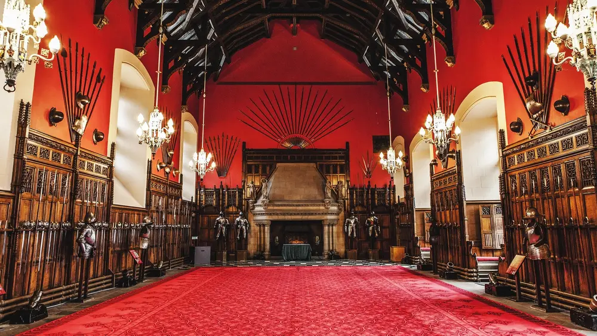

The DoTravelling journal · Scotland
Culture and history,
at a slower pace.
Edinburgh packs libraries, museums, historic streets and castles into a small, walkable city. This guide helps you choose a few and enjoy them properly, instead of rushing through them all.
Four ways in
Choose your
starting point.
Books and reading rooms
Libraries
Quiet rooms and old shelves, good for a rainy afternoon.
Jump to libraries ↓
Collections and galleriesMuseums
Indoor days that can fill a whole morning without a rush.
Jump to museums ↓ Streets and storiesHistory
The Old Town and New Town, best understood on foot.
Jump to history ↓ Fortresses and ruinsCastles
One famous castle, and a few quieter ones worth finding.
Jump to castles ↓